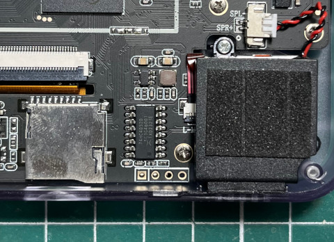
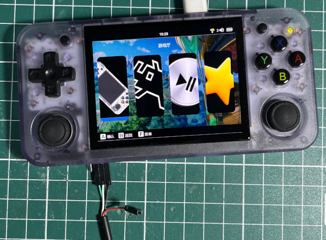

UART腳位


[47]HELLO! BOOT0 is starting!
[50]BOOT0 commit : 749c1f9a-dirty
[54]set pll start
[56]periph0 has been enabled
[59]set pll end
[61][pmu]: bus read error
[63][pmu]: bus read error
[66]PMU: AXP2202
[69]dram return write ok
[72]board init ok
[73]DRAM BOOT DRIVE INFO: V0.651
[77]the chip id is 0x6c00
[79]chip id check OK
[82]DRAM_VCC set to 1100 mv
[84]DRAM CLK =672 MHZ
[87]DRAM Type =8 (3:DDR3,4:DDR4,7:LPDDR3,8:LPDDR4)
[98]Actual DRAM SIZE =1024 M
[101]DRAM SIZE =1024 MBytes, para1 = 30fa, para2 = 4000000, dram_tpr13 = 2006c61
[115]DRAM simple test OK.
[117]rtc standby flag is 0x0, super standby flag is 0x0
[123]dram size =1024
[126]card no is 0
[127]sdcard 0 line count 4
[130][mmc]: mmc driver ver 2021-10-12 13:56
[134][mmc]: b mmc 0 bias 0
[142][mmc]: Wrong media type 0x0
[146][mmc]: ***Try SD card 0***
[155][mmc]: HSSDR52/SDR25 4 bit
[158][mmc]: 50000000 Hz
[161][mmc]: 59638 MB
[163][mmc]: ***SD/MMC 0 init OK!!!***
[273]Loading boot-pkg Succeed(index=0).
[277][mmc]: b mmc 0 bias 0
[280]Entry_name = u-boot
[290]Entry_name = monitor
[294]Entry_name = dtbo
[297]Entry_name = dtb
[301]Jump to second Boot.
NOTICE: BL3-1: v1.0(debug):f30a720
NOTICE: BL3-1: Built : 16:02:57, 2024-06-26
NOTICE: BL3-1 commit: 8
NOTICE: cpuidle init version V2.0
ERROR: tsp_ep_info->pc is NULL
ERROR: Error initializing runtime service tspd_fast
NOTICE: BL3-1: Preparing for EL3 exit to normal world
NOTICE: BL3-1: Next image address = 0x4a000000
NOTICE: BL3-1: Next image spsr = 0x1d3
U-Boot 2018.05 (Jul 12 2024 - 23:36:46 +0800) Allwinner Technology
[00.389]CPU: Allwinner Family
[00.392]Model: sun50iw9
I2C: ready
[00.396]DRAM: 1 GiB
[00.399]Relocation Offset is: 35eba000
[00.447]secure enable bit: 0
[00.450]pmu_axp152_probe pmic_bus_read fail
[00.454]pmu_axp1530_probe pmic_bus_read fail
[00.458]PMU: AXP2202
[02.663]battery probe reset :STATUS0:0x20
[02.666]BMU: AXP2202
[02.668][AXP2202] comm status : 0x0 = 0x20, 0x1 = 0x90
[02.673][AXP2202] onoff status: 0x20 = 0x4, 0x21 = 0x0
AXP2202_IIN_LIM:38
AXP2202_IIN_LIM:38
[02.684][axp][err]:
b12_mode: 0
AXP2202_IIN_LIM:38
FDT ERROR:fdt_get_regulator_name:get property handle twi-supply error:FDT_ERR_INTERNAL
[02.716]CPU=1008 MHz,PLL6=600 Mhz,AHB=200 Mhz, APB1=100Mhz MBus=400Mhz
[02.725]drv_disp_init
[02.759]__clk_enable: clk is null.
[02.765]drv_disp_init finish
[02.767]gic: sec monitor mode
[02.800]flash init start
[02.802]workmode = 0,storage type = 1
[02.805]MMC: 0
[02.807][mmc]: mmc driver ver uboot2018:2021-07-19 14:09:00
[02.813][mmc]: get sdc_type fail and use default host:tm1.
[02.824][mmc]: Using default timing para
[02.827][mmc]: SUNXI SDMMC Controller Version:0x40200
[02.845][mmc]: card_caps:0x3000000a
[02.848][mmc]: host_caps:0x3000003f
[02.852]sunxi flash init ok
[02.856]Loading Environment from SUNXI_FLASH... OK
[02.873]out of usb burn from boot: not need burn key
[02.877]boot_gui_init:start
partno erro : can't find partition Reserve0
[02.891]Get Reserve0 partition number fail!
tcon_de_attach:de=0,tcon=0===LCD_power_on:184
--allen--PE_input[31:0] = 0x77777777
--allen--PE_input[31:0] = 0x6777777
--allen--PE_pull[31:0] = 0x0
--allen--PE_pull[31:0] = 0x5000
--allen--PE_data[31:0] = 0xc0
[02.919]boot_gui_init:finish
[02.923]bmp_name=bootlogo.bmp
partno erro : can't find partition bootloader
===lcd_panel_uboot_fj035fhd05_v1_init:267 lcd_type = 0
921654 bytes read in 185 ms (4.8 MiB/s)
[03.130]get_boot_dram_update_flag 0
[03.134]Item0 (Map) magic is bad
[03.136]the secure storage item0 copy0 magic is bad
[03.142]Item0 (Map) magic is bad
[03.145]the secure storage item0 copy1 magic is bad
[03.149]Item0 (Map) magic is bad
[03.155]update dts
partno erro : can't find partition private
partno erro : can't find partition private
partno erro : can't find partition private
partno erro : can't find partition private
partno erro : can't find partition private
partno erro : can't find partition private
partno erro : can't find partition private
[03.236]update part info
start detect rtc domain...
rtc domain status: okay [0x90000000]
[03.251]update bootcmd
[03.253]No ethernet found.
Hit any key to stop autoboot: 0
===LCD_bl_open:203
[03.275]LCD open finish
Android's image name: sun50i_arm64
[04.181]Starting kernel ...
[04.183][mmc]: MMC Device 2 not found
[04.187][mmc]: mmc 2 not find, so not exit
[ 0.000000] Booting Linux on physical CPU 0x0
[ 0.000000] Linux version 4.9.170 (flower@flower-B85M-D2V) (gcc version 5.3.1 20160412 (Linaro GCC 5.3-2016.05) ) #274 SMP PREEMPT Fri Jul 5 10:36:42 CST 2024
[ 0.000000] Boot CPU: AArch64 Processor [410fd034]
[ 0.000000] bootconsole [earlycon0] enabled
[ 0.000000] allen_boe_lcd=0, str=old
[ 0.081642] BOOTEVENT: 81.638290: ON
[ 0.571309] sunxi:i2c_sunxi@twi3[ERR]: get supply failed!
[ 0.571883] sunxi:i2c_sunxi@twi5[ERR]: get supply failed!
[ 0.581714] axp2101-regulator axp2101-regulator.0: Setting DCDC frequency for unsupported AXP variant
[ 0.581801] axp2101-regulator axp2101-regulator.0: Error setting dcdc frequency: -22
[ 1.017099] uart uart1: get regulator failed
[ 1.043366] [NAND][NE] Not found valid nand node on dts
[ 1.051252] sunxi-wlan soc@03000000:wlan: get gpio chip_en failed
[ 1.058338] sunxi-wlan soc@03000000:wlan: get gpio power_en failed
[ 1.156140] hci: request ohci0-controller gpio:272
[ 1.161851] hci: request ohci1-controller gpio:147
[ 1.381462] --[allen]-- sunxi_gpadc_probe: 321
[ 1.386666] ---[allen] sunxi_gpadc_probe: allen_gpadc_enable_flg=1
[ 1.404062] rtc-pcf8563 5-0051: low voltage detected, date/time is not reliable.
[ 1.414987] VE: get debugfs_mpp_root is NULL, please check mpp
[ 1.414987]
[ 1.423209] VE: sunxi ve debug register driver failed!
[ 1.423209]
[ 1.435214] axp2202_usb_power: axp2202-acin device is not configed, not use vbus-det
[ 1.435214]
[ 2.725689] mmc:failed to get gpios
[ 2.784895] sunxi-mmc sdc1: smc 2 p1 err, cmd 52, RTO !!
[ 2.791690] sunxi-mmc sdc1: smc 2 p1 err, cmd 52, RTO !!
[ 2.802031] sunxi-mmc sdc1: smc 2 p1 err, cmd 5, RTO !!
[ 2.808737] sunxi-mmc sdc1: smc 2 p1 err, cmd 5, RTO !!
[ 2.815456] sunxi-mmc sdc1: smc 2 p1 err, cmd 5, RTO !!
[ 2.822148] sunxi-mmc sdc1: smc 2 p1 err, cmd 5, RTO !!
[ 2.845686] ERROR: pinctrl_get for HDMI2.0 DDC fail
[ 2.868920] cpu cpu1: opp_list_debug_create_link: Failed to create link
[ 2.876573] cpu cpu1: _add_opp_dev: Failed to register opp debugfs (-12)
[ 2.884300] cpu cpu2: opp_list_debug_create_link: Failed to create link
[ 2.891741] cpu cpu2: _add_opp_dev: Failed to register opp debugfs (-12)
[ 2.899321] cpu cpu3: opp_list_debug_create_link: Failed to create link
[ 2.906800] cpu cpu3: _add_opp_dev: Failed to register opp debugfs (-12)
[ 2.972464] rtc-pcf8563 5-0051: low voltage detected, date/time is not reliable.
[ 2.980742] rtc-pcf8563 5-0051: hctosys: unable to read the hardware clock
[ 2.990230] [sound 402][CODEC-HDMI sunxi_codec_dev_probe] register codec-hdmi success
[ 2.999997] [asoc_simple_probe, 432]
[ 3.005632] [asoc_simple_probe, 432]
[ 3.010463] [asoc_simple_probe, 432]
[ 3.014575] [asoc_simple_probe, 432]
[ 3.019918] [asoc_simple_probe, 432]
[/init]: getty is ttyS0
[/init]: RootDevice is "/dev/mmcblk0p5" , GPT_SUPPORT=1
[/init]: Try to load EMMC ...
e2fsck 1.42.12 (29-Aug-2014)
/dev/mmcblk0p5 has unsupported feature(s): metadata_csum
e2fsck: Get a newer version of e2fsck!
[ 3.768121] systemd[1]: Failed to find module 'autofs4'
[ 3.777701] cgroup: cgroup2: unknown option "nsdelegate,memory_recursiveprot"
[ 3.786247] cgroup: cgroup2: unknown option "nsdelegate"
Welcome to Ubuntu 22.04 LTS!
[ OK ] Created slice Slice /system/getty.
[ OK ] Created slice Slice /system/modprobe.
[ OK ] Created slice Slice /system/serial-getty.
[ OK ] Created slice User and Session Slice.
[ OK ] Started Dispatch Password …ts to Console Directory Watch.
[ OK ] Started Forward Password R…uests to Wall Directory Watch.
[ OK ] Reached target Local Encrypted Volumes.
[ OK ] Reached target Path Units.
[ OK ] Reached target Remote File Systems.
[ OK ] Reached target Slice Units.
[ OK ] Reached target Swaps.
[ OK ] Reached target Local Verity Protected Volumes.
[ OK ] Listening on Syslog Socket.
[ OK ] Listening on initctl Compatibility Named Pipe.
[ OK ] Listening on Journal Audit Socket.
[ OK ] Listening on Journal Socket (/dev/log).
[ OK ] Listening on Journal Socket.
[ OK ] Listening on udev Control Socket.
[ OK ] Listening on udev Kernel Socket.
Mounting Kernel Debug File System...
Starting Journal Service...
Starting Load Kernel Module configfs...
Starting Load Kernel Module drm...
Starting Load Kernel Module fuse...
Starting Load Kernel Modules...
Starting Remount Root and Kernel File Systems...
[ 5.240508] [asoc_simple_probe, 432]
Starting Coldplug All udev Devices...
[ OK ] Started Journal Service.
[ OK ] Mounted Kernel Debug File System.
[ OK ] Finished Load Kernel Module configfs.
[ OK ] Finished Load Kernel Module drm.
[ OK ] Finished Load Kernel Module fuse.
[ OK ] Finished Load Kernel Modules.
[ OK ] Finished Remount Root and Kernel File Systems.
Mounting FUSE Control File System...
Mounting Kernel Configuration File System...
Starting Flush Journal to Persistent Storage...
Starting Load/Save Random Seed...
Starting Apply Kernel Variables...
Starting Create System Users...
[ OK ] Mounted FUSE Control File System.
[ OK ] Finished Coldplug All udev Devices.
[ OK ] Mounted Kernel Configuration File System.
[ OK ] Finished Flush Journal to Persistent Storage.
[ OK ] Finished Load/Save Random Seed.
[ OK ] Finished Apply Kernel Variables.
[ OK ] Finished Create System Users.
Starting Create Static Device Nodes in /dev...
[ OK ] Finished Create Static Device Nodes in /dev.
[ OK ] Reached target Preparation for Local File Systems.
[ OK ] Reached target Local File Systems.
Starting Set Up Additional Binary Formats...
Starting Create Volatile Files and Directories...
Starting Rule-based Manage…for Device Events and Files...
Starting Uncomplicated firewall...
[FAILED] Failed to start Set Up Additional Binary Formats.
See 'systemctl status systemd-binfmt.service' for details.
[ OK ] Finished Create Volatile Files and Directories.
[ OK ] Finished Uncomplicated firewall.
[ OK ] Reached target Preparation for Network.
Starting Network Name Resolution...
Starting Record System Boot/Shutdown in UTMP...
[ OK ] Started Rule-based Manager for Device Events and Files.
[ OK ] Finished Record System Boot/Shutdown in UTMP.
[ OK ] Reached target System Initialization.
[ OK ] Started Daily dpkg database backup timer.
[ OK ] Started Periodic ext4 Onli…ata Check for All Filesystems.
[ OK ] Started Discard unused blocks once a week.
[ OK ] Started Daily rotation of log files.
[ OK ] Started Daily man-db regeneration.
[ OK ] Started Message of the Day.
[ OK ] Started Daily Cleanup of Temporary Directories.
[ 7.156386] proc: unrecognized mount option "hidepid=invisible" or missing value
[ OK ] Reached target Timer Units.
[ OK ] Listening on D-Bus System Message Bus Socket.
[ OK ] Listening on UUID daemon activation socket.
[ OK ] Reached target Socket Units.
[ OK ] Reached target Basic System.
[ OK ] Started Regular background program processing daemon.
[ OK ] Started D-Bus System Message Bus.
Starting Network Manager...
[ OK ] Started Save initial kernel messages after boot.
Starting Remove Stale Onli…t4 Metadata Check Snapshots...
Starting launcher.service...
Starting Dispatcher daemon for systemd-networkd...
Starting Authorization Manager...
Starting System Logging Service...
Starting User Login Management...
Starting WPA supplicant...
[ OK ] Reached target Hardware activated USB gadget.
[ OK ] Found device /dev/ttyS0.
[ OK ] Listening on Load/Save RF …itch Status /dev/rfkill Watch.
Starting Load/Save RF Kill Switch Status...
[ OK ] Started Load/Save RF Kill Switch Status.
Starting Save/Restore Sound Card State...
[ OK ] Started Network Name Resolution.
[ OK ] Reached target Host and Network Name Lookups.
[ OK ] Started User Login Management.
[ OK ] Started WPA supplicant.
[ OK ] Started System Logging Service.
[ OK ] Finished Save/Restore Sound Card State.
[ OK ] Started launcher.service.
[ OK ] Started Authorization Manager.
[ OK ] Started Network Manager.
[ OK ] Reached target Network.
[ OK ] Reached target Sound Card.
Starting Modem Manager...
Starting /etc/rc.local Compatibility...
Starting Permit User Sessions...
[ OK ] Started Unattended Upgrades Shutdown.
[ OK ] Finished Remove Stale Onli…ext4 Metadata Check Snapshots.
[ OK ] Finished Permit User Sessions.
Starting Hostname Service...
[ 9.714983] sunxi-mmc sdc1: smc 2 p1 err, cmd 52, RTO !!
[ 9.721776] sunxi-mmc sdc1: smc 2 p1 err, cmd 52, RTO !!
[ 10.479589] [asoc_simple_probe, 432]
[ OK ] Started /etc/rc.local Compatibility.
[ 10.511080] [asoc_simple_probe, 432]
[ OK ] Started Getty on tty1.
[ OK ] Started Serial Getty on ttyS0.
[ 10.565906] proc: unrecognized mount option "hidepid=invisible" or missing value
[ OK ] Reached target Login Prompts.
[ OK ] Started Modem Manager.
[ OK ] Started Hostname Service.
Starting Network Manager Script Dispatcher Service...
Stopping Network Manager...
[ OK ] Started Network Manager Script Dispatcher Service.
[ OK ] Started Dispatcher daemon for systemd-networkd.
[ OK ] Stopped Network Manager.
Starting Network Manager...
[ OK ] Started Network Manager.
[ OK ] Reached target Multi-User System.
[ OK ] Reached target Graphical Interface.
Starting Record Runlevel Change in UTMP...
[ OK ] Finished Record Runlevel Change in UTMP.
[ 13.437759] rtc-pcf8563 5-0051: low voltage detected, date/time is not reliable.
Ubuntu 22.04 LTS ANBERNIC ttyS0
ANBERNIC login: [ 18.285360] Bluetooth: Non-link packet received in non-active state